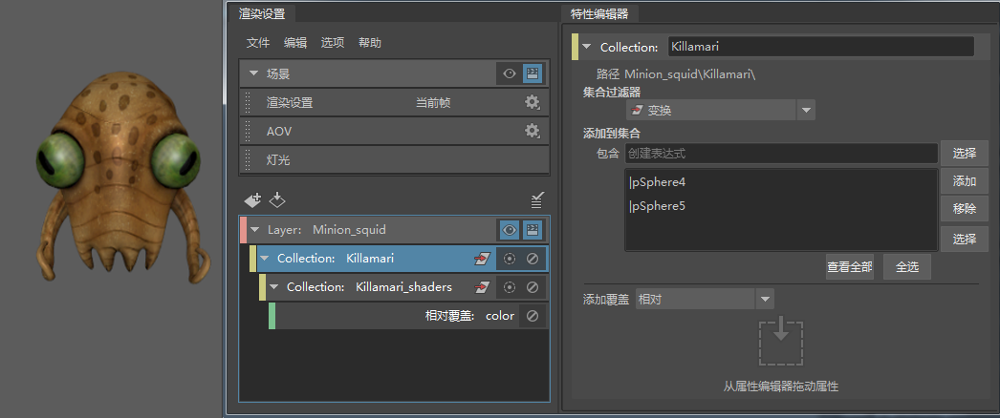
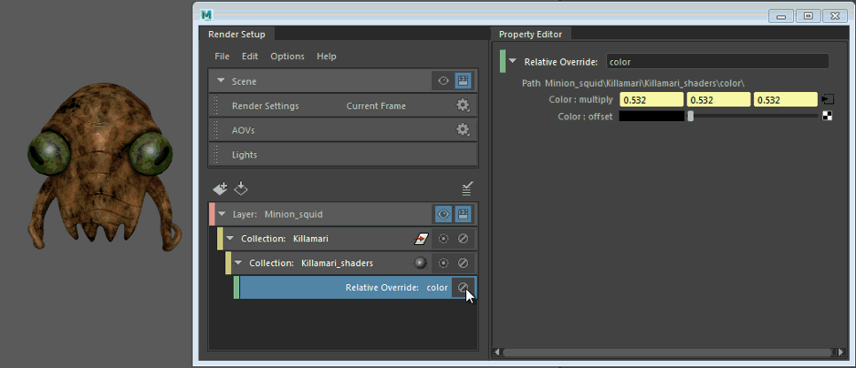

您可以在任何值上创建绝对或相对覆盖，然后将网络连接到覆盖。例如，您可以在颜色属性上创建一个相对覆盖并将纹理连接到此覆盖。
有关绝对或相对覆盖的详细信息，请参见在渲染层中为集合创建覆盖。
- 选择您的集合并向其添加要创建覆盖的对象。
- 从“添加覆盖”(Add Override)下拉列表中选择“绝对”(Absolute)或“相对”(Relative)。
- 使用鼠标中键将要覆盖的属性（也就是值）从“属性编辑器”(Attribute Editor)拖放到“特性编辑器”(Property Editor)。
- 选择覆盖，然后单击
 按钮将网络连接到覆盖。
按钮将网络连接到覆盖。
对于相对覆盖，请选择覆盖，然后单击“相乘”(multiply)属性旁边的
按钮。例如，如果将“颜色”(Color)属性从着色器拖放到“特性编辑器”(Property Editor)，然后将棋盘格纹理连接到覆盖上的“相乘”(multiply)属性，则对象在视口中看起来像棋盘格。
对于绝对覆盖，请选择覆盖，然后单击要创建覆盖的属性旁边的
按钮；例如，“颜色”(Color)。
- （可选）对于相对覆盖，请调整“偏移”(offset)值以调整纹理强度。
或者，也可以使用连接覆盖达到相同的效果。但是，首选方法是对值创建替代项，因为此方法更简单。
此外，该功能还允许在两个网络之间切换。
在本示例中，乌贼的身体和每只眼睛均已连接到 Blinn 着色器，其颜色属性连接到了文件纹理。从“添加覆盖”(Add Override)下拉列表中选择“相对”(Relative)，然后将“颜色”(Color)属性从 Blinn 的“属性编辑器”(Attribute Editor)拖放到“特性编辑器”(Property Editor)。
shaders 子集合将随“相对”(Relative)覆盖一起创建。

选择相对覆盖。单击“相乘”(multiply)属性旁边的 按钮并连接到纹理；例如，“分形”(Fractal)。
启用或禁用覆盖以在两个着色网络之间切换。此外，您还可以拖动“偏移”(offset)属性旁边的滑块来调整着色强度。
